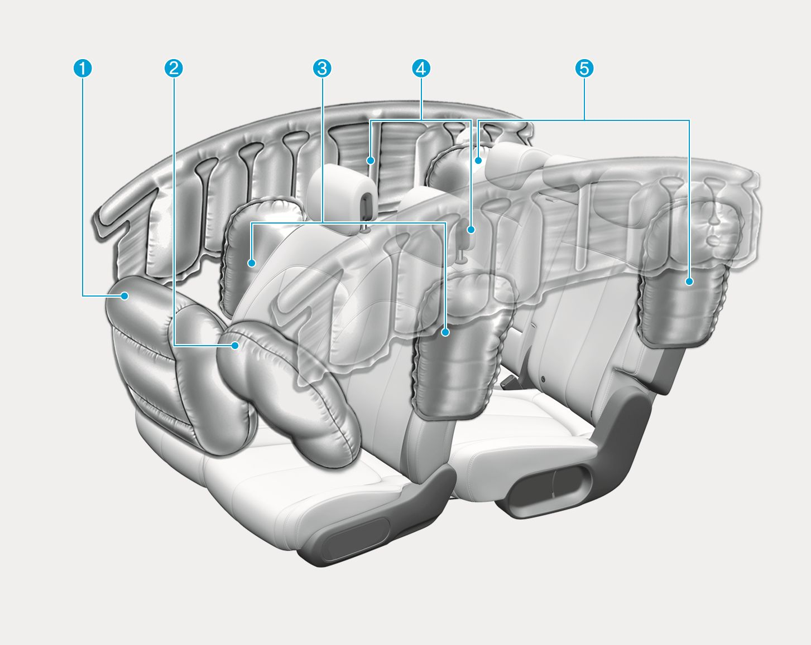

차량에 설치된 에어백
추가적인 보호 기능을 제공하기 위해 차량에 설치된 에어백의 위치와 명칭은 다음과 같습니다.
-
이 문서에 포함된 차량 및 부품 이미지는 예시를 위해 제공되는 것으로, 실제 차량 또는 부품과 다를 수 있습니다.

1C_AirbagOverview
- 동승석 에어백
- 운전석 에어백
- 앞좌석 사이드 에어백
- 커튼 에어백
- 뒷좌석 사이드 에어백
추가적인 보호 기능을 제공하기 위해 차량에 설치된 에어백의 위치와 명칭은 다음과 같습니다.
이 문서에 포함된 차량 및 부품 이미지는 예시를 위해 제공되는 것으로, 실제 차량 또는 부품과 다를 수 있습니다.

1C_AirbagOverview